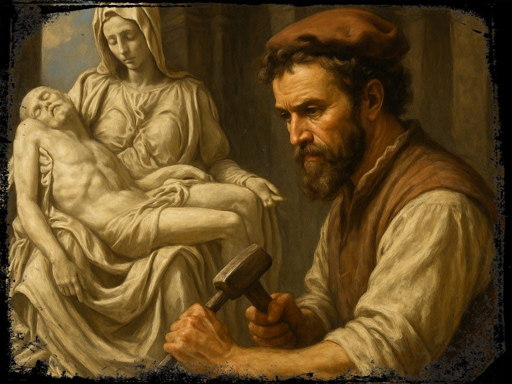
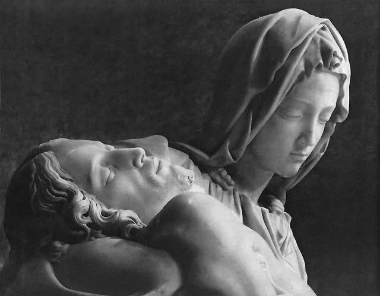
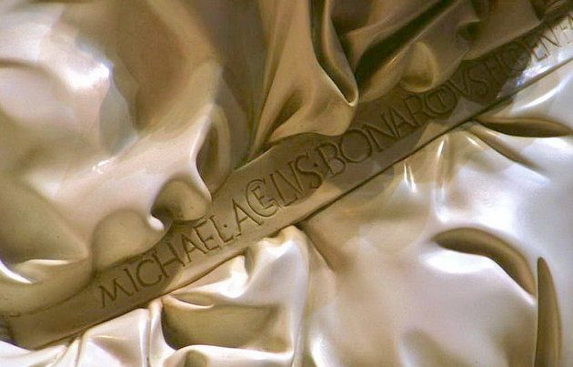
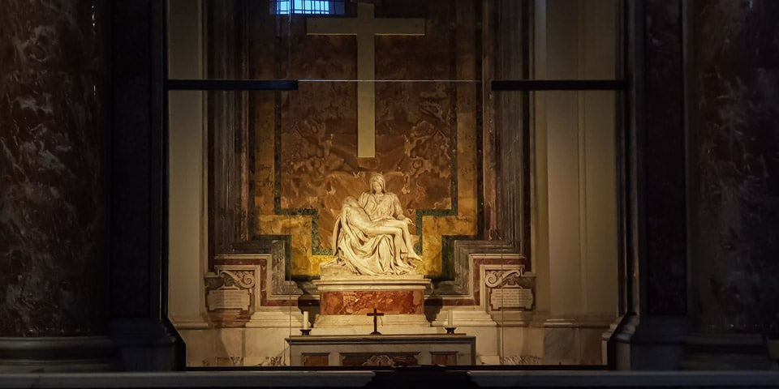

El encargo y el artista de 23 años

En 1497, el cardenal francés Jean de Bilhères de Lagraulas, embajador del rey de Francia ante la Santa Sede, encargó a un joven florentino llamado Miguel Ángel —que tenía 23 años y era prácticamente desconocido fuera de Florencia— una escultura para su capilla funeraria en la basílica de San Pedro. El tema: la Pietà, es decir, la Virgen sosteniendo el cuerpo de Cristo después del Descendimiento de la Cruz. El contrato, fechado en agosto de 1498, establecía que sería «la obra de mármol más bella de Roma».
Miguel Ángel cumplió esa promesa. Y la superó.
«Y a ti misma una espada te atravesará el alma.»
La composición: una pirámide perfecta

El problema técnico que Miguel Ángel debía resolver era formidable: cómo hacer que el cuerpo adulto de un hombre —Cristo— descanse de manera natural y armoniosa sobre el regazo de una mujer sentada —María— sin que la composición resulte torpe o antinatural. Su solución fue múltiple: los ropajes de María crean un regazo mucho más amplio que el cuerpo real de la figura; el cuerpo de Cristo se organiza en una leve curva que se adapta al espacio disponible; y toda la composición adopta una estructura piramidal, con la cabeza de María en el vértice, que genera una sensación de equilibrio y serenidad.
El resultado es una imagen de una serenidad que trasciende el dolor: María no llora, no se desespera. Su expresión es la de quien acepta. Su mano derecha, abierta y vuelta hacia arriba, es un gesto que puede leerse como una ofrenda, una entrega.
María más joven que su hijo: la elección deliberada

Una de las características más desconcertantes de la Pietà es que María parece más joven que Cristo. No es un error artístico sino una elección teológica consciente. Según su biógrafo Ascanio Condivi, cuando alguien le preguntó por ello, Miguel Ángel respondió: «¿No sabes que las mujeres castas se conservan mucho más frescas que las que no lo son? Cuánto más entonces una Virgen a la que nunca tocó ningún deseo lascivioso que pudiera alterar su cuerpo.»
La Inmaculada Concepción y la virginidad perpetua de María se traducen aquí en juventud inalterable: quien no conoce el pecado no conoce el deterioro que el pecado introduce en la naturaleza humana.
La firma: el único orgullo de Miguel Ángel

La Pietà es la única obra que Miguel Ángel firmó. La historia de la firma es reveladora de su carácter. Según Condivi, poco después de instalar la obra en San Pedro, Miguel Ángel escuchó a unos visitantes atribuirla a Cristoforo Solari, escultor milanés conocido como «il Gobbo». Indignado, esa misma noche entró a la basílica con una vela y cinceló en la banda que cruza el pecho de María la leyenda: MICHAEL·AGELVS·BONAROTVS·FLORENT·FACIEBAT (Miguel Ángel Buonarroti, florentino, lo hacía).
Años más tarde se arrepintió de aquel acto de vanidad y no volvió a firmar ninguna obra.
El ataque de 1972

El 21 de mayo de 1972, domingo de Pentecostés, un geólogo húngaro-australiano llamado Laszlo Toth se lanzó sobre la Pietà con un martillo geológico, asestándole quince golpes mientras gritaba «¡Yo soy Jesucristo, he resucitado de entre los muertos!». El ataque rompió el brazo izquierdo de María, le arrancó el párpado izquierdo y le destruyó parte de la nariz.
Los fragmentos —49 en total— fueron recogidos por los visitantes presentes y devueltos al Vaticano. La restauración, llevada a cabo en los laboratorios de los Museos Vaticanos, fue completada en 1973 usando los fragmentos originales unidos con resina y, donde fue necesario, mármol de Carrara recuperado del borde inferior original de la escultura. Desde entonces, la Pietà está protegida por una mampara de cristal antibalas.
Significado mariano
La Pietà es una de las representaciones más profundas del dolor materno de María, la cuarta de sus Siete Dolores. El nombre viene del latín pietas: piedad, compasión, devoción filial. En el sentido cristiano, es la compasión de María por el sufrimiento de su hijo, que duplica en cierto modo el sufrimiento de Cristo por la humanidad.
Lo que hace única a la Pietà de Miguel Ángel entre todas las representaciones de este tema es la ausencia de desolación: María no llora. Su serenidad no es indiferencia sino algo más profundo: la aceptación total de la voluntad de Dios, el mismo fiat del Anunciación llevado hasta su consecuencia última. En esa serenidad ante el dolor más grande, Miguel Ángel esculpió la fe más pura.